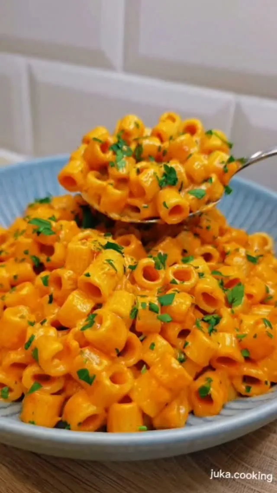

Cremige rote Pesto-Nudeln
Wenn es schnell gehen soll, aber trotzdem richtig lecker sein muss: Diese cremigen roten Pesto-Nudeln sind in wenigen Minuten fertig und schmecken einfach unglaublich gut!
- 6 Zutaten
- 6 Schritte
Zur Zubereitung Video ansehen ↗
Zutaten
Zubereitung
- Nudeln in Salzwasser al dente kochen.
- Kochsahne in einer Pfanne erhitzen.
- Rotes Pesto und Tomatenmark einrühren.
- Mit den Gewürzen abschmecken.
- Käse unterrühren, bis die Sauce schön cremig ist.
- Nudeln direkt in die Sauce geben, vermengen und kurz ziehen lassen.